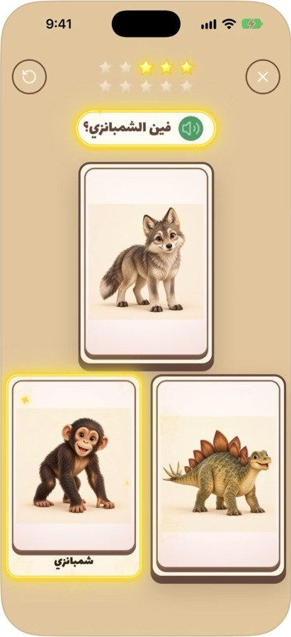

Meet the app
A world of animals.
A world of words.
Real screens from the Itkalim app.


Listen. Learn. Speak.
Learn a little. Play a little.
Itkalim 1.4 brings three games to every language in the app, starting with Egyptian Arabic and Turkish: “Let’s play” to find the animal you hear, letter tracing you can feel under your finger, and an airport board that counts from one to ten. Every word is a real voice, and parents can record their own Egyptian lines.